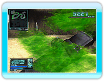

12 |
振り払いシステムの説明 |
 |
|
MADSECTA
至近距離で、敵クリーチャーを攻撃すると傷口から体液が飛び散ります。
プレイヤーがこの体液を浴びると、視界が悪くなってしまいます。また、体液を大量に浴び続けている間は、ダメージを受け続けます。 このような場合には、「ヌンチャク」を振ることで、付着した体液を拭うことがでます。 ※ ビームウィップで攻撃した場合は、体液を浴びません。
 バトル中には、プレイヤーに噛み付いてくる敵クリーチャーも登場します。 バトル中には、プレイヤーに噛み付いてくる敵クリーチャーも登場します。噛み付かれた場合、操作不能になり、噛み付かれている間は、ダメージを受け続けます。 このような場合には、「ヌンチャク」と「Wiiリモコン」を素早く振ることで、噛み付いた敵クリーチャーを振りほどくことができます。 |
 |
 |
 |